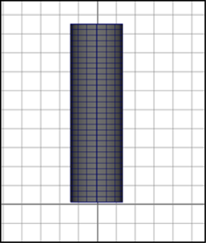

此示例类似于通过刚性蒙皮为圆柱体蒙皮，因此可将平滑蒙皮与刚性蒙皮进行比较。
创建圆柱体
- 使用下列选项创建 NURBS 圆柱体：
- 高度(Height)：8
- 分段数(Sections)：16
- 跨度数(Spans)：32

为圆柱体创建骨架
- 为圆柱体构建骨架。使骨架由一个包括七个关节的单关节链构成。

该骨架由一个关节链组成（joint1 到 joint7）。Joint4 约从圆柱体的中心位置开始。
通过平滑蒙皮进行绑定
- 选择骨架根关节（默认名称：joint1）。
- 按住 Shift 键并选择圆柱体。
- 选择“蒙皮 > 绑定蒙皮”(Skin > Bind Skin)。
练习使用骨架
- 选择大约位于圆柱体中心的关节（例如，joint4），然后旋转大约 90 度。
绘制折痕效果
- 选择平滑着色处理显示模式（热键：按 5 键）。
- 选择圆柱体。
- 选择“蒙皮 > 绘制蒙皮权重工具”(Skin > Paint Skin Weights Tool) >
 。
。
此时将显示“绘制蒙皮权重工具”(Paint Skin Weights Tool)。“影响”(Influences)列表将显示所有关节的名称。
- 在“影响”(Influences)列表中，单击 joint4。
将在网格上显示黑白色的可视反馈，以显示 joint4 对圆柱体网格的影响。
- 在“绘制蒙皮权重工具”(Paint Skin Weights Tool)的底部，启用“使用颜色渐变”(Use Color Ramp)。

现在，圆柱体网格利用颜色显示权重值反馈，更便于查看权值较小的网格区域。
- 使用“绘制蒙皮权重工具”(Paint Skin Weights Tool)的笔刷，绘制关节如何影响折痕。
附近关节影响的绘制让您能够编辑变形效果。